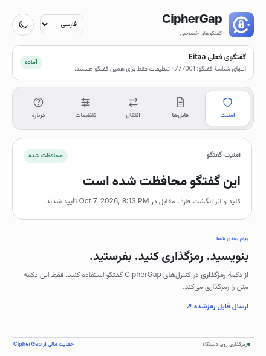
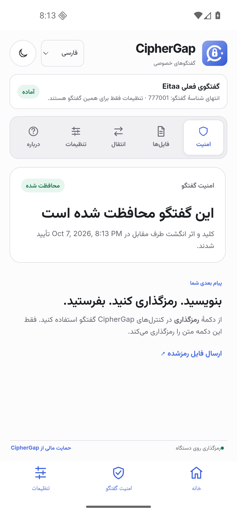

عکس، فایل و پیام
متن و ایموجی بفرستید، عکس باز کنید و صدا یا ویدیو را بعد از رمزگشایی پخش کنید. فایل اصلی هم قابل دانلود است.
با CipherGap پیام و فایل را پیش از ارسال رمز کنید. گفتگو در پیامرسان خودتان میماند؛ شما و طرف مقابل با CipherGap و یک کلید مشترک پیامها را میخوانید. روی کامپیوتر و اندروید.


حساب جدید لازم نیست؛ نسخهٔ وب را باز کنید.
روش کار
بعد از ساخت کلید مشترک، ابزارهای CipherGap کنار گفتگوی شما قرار میگیرند. از همانجا پیام و فایل رمزشده بفرستید.
پیام را بنویسید یا فایل را از ابزار CipherGap انتخاب کنید.
برای متن، Encrypt و برای فایل، Encrypted file را بزنید.
متن رمزشده یا فایل .cgpe به پیامرسان میرسد.
طرف مقابل با CipherGap پیام را باز میکند.
دکمههای معمولی پیامرسان، پیام و فایل معمولی میفرستند. برای رمزگذاری از ابزارهای CipherGap استفاده کنید.
قابلیتها
متن و ایموجی بفرستید، عکس باز کنید و صدا یا ویدیو را بعد از رمزگشایی پخش کنید. فایل اصلی هم قابل دانلود است.
از داخل چت کلید مشترک بسازید و کد ششرقمی را با طرف مقابل از یک راه مطمئن مقایسه کنید.
از کلیدها و تنظیمات پشتیبان رمزدار بگیرید و روی دستگاه جدید وارد کنید. برای انتقال یک کلید هم میتوانید از QR استفاده کنید.
ویدیوی نمایشی
ویدیوی ۳۴ ثانیهای، با قابلیتهای منتشرشده. روی یک صفحهٔ آزمایشی محلی ضبط شده است، نه روی پیامرسان یا حساب واقعی.
تصاویر برنامه
امنیت گفتگو، ارسال فایل و انتقال کلید در چند تصویر. روی هر تصویر بزنید تا بزرگتر ببینید. تصاویر مربوط به افزونهٔ ۱.۷.۰ و اندروید ۰.۱.۳ هستند و اطلاعات نمایشی دارند.
فایل را انتخاب کنید و دریافت خودکار فایلهای تازه را برای همین گفتگو تنظیم کنید.
از همهٔ گفتگوها یا فقط یک چت پشتیبان بگیرید و کلید را با QR منتقل کنید.
همان کلید و تنظیمات گفتگو، داخل برنامهٔ اندروید.
فرمت مشترک پشتیبان بین اندروید و وب؛ خواندن QR از دوربین یا تصویر.
دانلود و نصب
شما و طرف مقابل، هر دو CipherGap لازم دارید. در بله، ایتا، تلگرام وب A، روبیکا و سروش پلاس میتوانید از اندروید و کامپیوتر با هم گفتگو کنید.
Desktop 1.7.0 / Android 0.1.4
ریلیز دسکتاپ ۱.۷.۰ · ریلیز اندروید ۰.۱.۴
مشاهدهٔ SHA-256 فایلهاCipherGap یک مرورگر برای نسخهٔ وب پیامرسانهاست. باید داخل خود برنامه وارد حساب پیامرسان شوید.
دانلود APK اندروید ↓ساخت release با امضای اختصاصی و دیباگ خاموش. برای جایگزینی نسخهٔ debug، اول پشتیبان رمزدار بگیرید؛ سپس نسخهٔ قبلی را حذف، این نسخه را نصب و پشتیبان را بازیابی کنید. راهنمای انتقال از نسخهٔ قدیمی
اگر اندروید اجازه خواست، نصب از مرورگر یا Files را برای همین نصب فعال کنید و سپس خاموش کنید. Play Protect را روشن نگه دارید.
در CipherGap، بله، ایتا، تلگرام وب A، روبیکا یا سروش پلاس را باز کنید و وارد حساب شوید.
بعد از انتخاب مخاطب، Chat security را بزنید. راهنمای ساخت کلید مشترک در بخش بعدی همین صفحه است.
اندروید ۸ به بالا برای نصب لازم است؛ WebView هم باید اجرای جداگانه را پشتیبانی کند. آن را از مسیر رسمی دستگاه بهروز کنید. اگر هشدار باقی ماند، از نسخهٔ کامپیوتر استفاده کنید.
فایل ZIP را دانلود کنید و مراحل زیر را انجام دهید. نصب افزونه بهصورت دستی است.
دانلود ZIP افزونه ↓پوشهای را نگه دارید که manifest.json داخل آن است.
این آدرس را در نوار آدرس مرورگر وارد کنید.
chrome://extensionsDeveloper mode را روشن کنید؛ Load unpacked را بزنید و پوشهٔ افزونه را انتخاب کنید.
وارد حساب شوید و یک گفتگو باز کنید. آیکون CipherGap را در نوار ابزار مرورگر باز کنید.
فایل ZIP را دانلود کنید و مراحل زیر را انجام دهید. نصب افزونه بهصورت دستی است.
دانلود ZIP فایرفاکس ↓پوشهای را نگه دارید که manifest.json داخل آن است.
این آدرس را در نوار آدرس مرورگر وارد کنید.
about:debugging#/runtime/this-firefoxLoad Temporary Add-on را بزنید و manifest.json را انتخاب کنید. این نصب با بستهشدن Firefox حذف میشود.
وارد حساب شوید و یک گفتگو باز کنید. آیکون CipherGap را در نوار ابزار مرورگر باز کنید.
فایل ZIP را دانلود کنید و مراحل زیر را انجام دهید. نصب افزونه بهصورت دستی است.
دانلود ZIP افزونه ↓پوشهای را نگه دارید که manifest.json داخل آن است.
این آدرس را در نوار آدرس مرورگر وارد کنید. برای Brave از brave://extensions استفاده کنید.
edge://extensionsDeveloper mode را روشن کنید؛ Load unpacked را بزنید و پوشهٔ افزونه را انتخاب کنید.
وارد حساب شوید و یک گفتگو باز کنید. آیکون CipherGap را در نوار ابزار مرورگر باز کنید.
بعد از نصب
این مراحل در برنامهٔ اندروید و افزونه یکیاند. لازم نیست دستگاههای شما یکسان باشند.
در تب امنیت، «راهاندازی چت امن» را بزنید. طرف مقابل درخواست را در گفتگو میپذیرد.
از تماس مطمئن یا حضوری، کد را روی هر دو دستگاه مقایسه و تأیید کنید. درخواست و کد پس از ۱۵ دقیقه منقضی میشوند.
با Encrypt یک پیام کوتاه بفرستید و مطمئن شوید طرف مقابل آن را میخواند. بعد، پیام و فایل موردنظرتان را ارسال کنید.
حریم خصوصی
رمزگذاری و رمزگشایی روی دستگاه انجام میشوند. خود پیامرسان، پیام رمزشده و اطلاعات عادی حساب و گفتگو را دریافت میکند.
وقتی پیام در صفحهٔ وب باز میشود، کد همان پیامرسان میتواند متن بازشده را بخواند. CipherGap هویت، زمان گفتگو یا دستگاه آلوده را پنهان یا ایمن نمیکند.
هر کسی QR کلید را ببیند میتواند کلید را دریافت کند. فایل پشتیبان رمزدار است؛ گذرواژهٔ آن را جدا نگه دارید.
هر دو نفر باید CipherGap داشته باشند. کلید هر گفتگو در نسخههای فعلی بلندمدت است و هر کس آن را داشته باشد پیامها را میخواند. پیامرسان همچنان میبیند چه کسی با چه کسی و چه زمانی گفتگو میکند. ادعای ممیزی امنیتی مستقل نداریم.
بهزودی
این قابلیتها در شاخهٔ اصلی پیادهسازی و آزمایش شدهاند، اما در نسخههای منتشرشدهٔ فعلی (دسکتاپ ۱.۷.۰ و اندروید ۰.۱.۴) نیستند. قالب جدید پیام (نسخهٔ ۲) نیاز دارد هر دو نفر بهروزرسانی کنند.
سازندهٔ گروه در همان چت دعوت میفرستد، اعضا میپیوندند و سازنده هر عضو را تأیید میکند؛ کلید گروه برای هر عضو جداگانه و رمزشده در همین چت میرسد.
کلیدهای جدید هر روز با یک چرخش یکطرفه جلو میروند. پس از بازهٔ نگهداری (پیشفرض ۷ روز، قابلتنظیم از ۱ تا ۹۰)، کلیدهای قدیمی حذف میشوند؛ کلید سرقتشده پیامهای قدیمی را باز نمیکند و آن پیامها عمداً ناخوانا میشوند.
HKDF برای کلیدهای تصادفی و PBKDF2 با ۶۰۰٬۰۰۰ تکرار برای گذرواژههای تایپشده، در قالب جدید پیام (نسخهٔ ۲).
AES-GCM سرایند پیام (نسخه، زمان، هدف) و سرایند فایل (نام، نوع، دوره) را احراز میکند؛ هر دستکاری شناسایی میشود.
دکمهٔ زمانسنج در گفتگو: ۵ دقیقه، ۱ ساعت، ۲۴ ساعت، ۷ روز یا حذف ۳۰ ثانیه پس از باز کردن. روی هر دستگاه اعمال میشود و جلوی اسکرینشات را نمیگیرد.
گذرواژهٔ اختیاری (حداقل ۶ نویسه) و قفل خودکار؛ کلیدها رمزشده ذخیره میشوند. فعلاً فقط در افزونهٔ مرورگر.
پیامهای قالب جدید (نسخهٔ ۲) نیاز دارند هر دو نفر برنامه را بهروزرسانی کنند. نسخههای قدیمی نمیتوانند آنها را بخوانند.
سوالات رایج
اگر پاسختان اینجا نبود، در GitHub یک issue باز کنید.
گزارش مشکل در GitHub ↗یک افزونهٔ کامپیوتر و برنامهٔ اندروید برای رمزگذاری پیام و فایل قبل از ارسال است. گفتگو از نسخهٔ وب پیامرسان فعلی شما عبور میکند؛ CipherGap روی دستگاه رمزگذاری و رمزگشایی میکند.
بله. هر دو نفر CipherGap و یک کلید مشترک لازم دارند. در بله، ایتا، تلگرام وب A، روبیکا و سروش پلاس، یک نفر میتواند اندروید داشته باشد و دیگری افزونهٔ کامپیوتر.
CipherGap در نسخهٔ وب کار میکند. روی کامپیوتر، سایت پیامرسان را باز میکنید؛ روی اندروید، همان سایت داخل مرورگر CipherGap باز میشود. برنامهٔ اصلی پیامرسان تغییر نمیکند.
دسکتاپ و اندروید: بله، ایتا، Telegram Web A، روبیکا و سروش پلاس. Telegram Web K و واتساپ پشتیبانی نمیشوند.
بله. نسخهٔ فعلی، هم شناسهٔ عددی مانند #333000 و هم نام کاربری مانند #@mralizohdi را تشخیص میدهد.
در تب انتقال، با یک گذرواژهٔ حداقل ۱۰ کاراکتری «خروجی همه» بگیرید. در دستگاه دیگر همان فایل و گذرواژه را وارد و بازیابی گفتگوهای اصلی را انتخاب کنید. حسابهای پیامرسان را جداگانه وارد کنید؛ تاریخچه و نشست ورود در پشتیبان نیستند.
پشتیبان یک چت بگیرید و طرف مقابل هنگام واردکردن، «استفاده از کلید در گفتگوی فعلی» را انتخاب کند؛ یا QR کلید را خصوصی نشان دهید و با دوربین، تصویر یا متن اسکنشده وارد کنید. کلید واردشده به معنی تأیید هویت نیست.
CipherGap کلیدها یا گذرواژهٔ پشتیبان را روی سرور نگه نمیدارد و نمیتواند آنها را بازیابی کند. حذف یا تغییر کلید ممکن است پیامهای قبلی را غیرقابلخواندن کند. یک پشتیبان امن نگه دارید.
دوربین فقط با مجوز شما برای اسکن QR در صفحهٔ محلی CipherGap فعال میشود؛ پیامرسانها و میکروفون دسترسی ندارند. اعلانها اختیاری و عمومیاند و فقط وقتی برنامه و صفحه باز هستند کار میکنند؛ اعلان پسزمینه نداریم.
فعلاً نسخهٔ iOS یا افزونهٔ Safari نداریم. نسخههای فعلی، برنامهٔ اندروید و افزونههای دسکتاپ Chrome، Chromium و Firefox هستند.
برای ارسال رمزشده باید ابزار CipherGap را انتخاب کنید. دکمههای معمولی پیامرسان، ارسال معمولی انجام میدهند. رمزگشایی و دریافت فایلهای تازه میتوانند برای هر چت اختیاری و خودکار باشند.
استفاده از CipherGap رایگان و کد آن باز است. حمایت مالی کاملاً اختیاری است و به توسعه و نگهداری کمک میکند.
حمایت از پروژه
اگر از CipherGap استفاده میکنید و دوست دارید به ادامهٔ توسعهاش کمک کنید، میتوانید از پروژه حمایت مالی کنید.